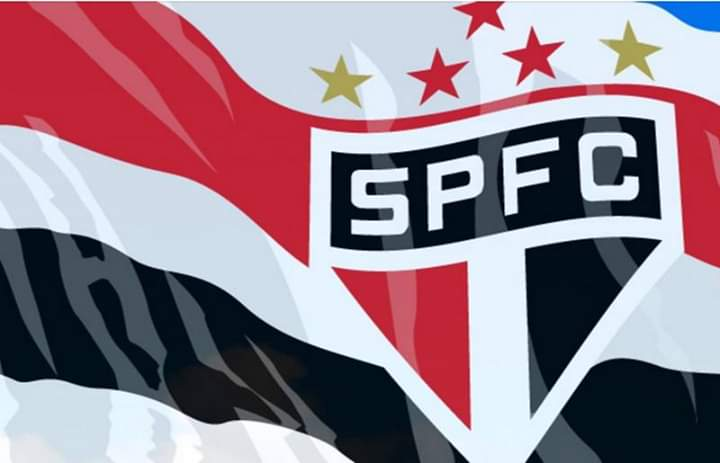

Artigo destacado aleatório
Manchester United 9–0 Ipswich Town foi uma partida de futebol, disputada em Old Trafford, Manchester, em 4 de março de 1995, válida pela trigésima rodada da FA Premier League de 1994–95. O resultado detém o recorde de maior vitória em casa na história da competição e a maior vitória conjunta em casa ou fora. As duas equipes entraram na partida em extremos opostos da tabela de classificação; o Manchester United estava na segunda posição, enquanto o Ipswich Town era o penúltimo colocado. No jogo correspondente em Portman Road, em Ipswich, no início da temporada, eles derrotaram o United por 3–2. A dupla de ataque do Manchester United, composta por Andy Cole e Mark Hughes, não era bem vista pelos especialistas e comentadores, e o United não tinha disponível para o jogo o atacante internacional francês Éric Cantona, porque esse estava suspenso por nove meses por chutar um espectador. Jogando diante da partida com o maior público da liga até aquele momento da temporada, o United marcou três vezes no primeiro tempo; Roy Keane abriu o placar, antes de Cole fazer mais dois gols. No segundo tempo, o United marcou quatro vezes nos primeiros vinte minutos; Cole marcou seu terceiro e quarto, enquanto Hughes também marcou dois. Paul Ince marcou o oitavo do United com um tiro livre em um gol vazio, enquanto o goleiro do Ipswich, Craig Forrest, discutia com o árbitro.
A trajetória do São Paulo mostra como e por que o clube é o mais vitorioso do futebol brasileiro[2] com a maior quantidade de conquistas nos três principais torneios de futebol disputados por clubes brasileiros, Campeonato Brasileiro (seis títulos), a Copa Libertadores da América (três títulos) e o Campeonato Mundial de Clubes (três títulos).[3]
(Leia mais)
Sobre o São Paulo FC
A mais jovem agremiação dentre os grandes do futebol brasileiro, o São Paulo FC é o clube mais vencedor do Brasil! Fundado em 25 de janeiro de 1930 e marcado por histórias de superação, como a refundação do clube em 1935 ou os tempos difíceis da construção do Morumbi, o Tricolor Mais Querido do planeta é o único clube brasileiro a ter conquistado a América e o Mundo por três vezes. É ainda o único Tricampeão consecutivo do Campeonato Brasileiro e o primeiro a conquistá-lo por seis vezes. Tri-Hexacampeão Brasileiro. Dentro das quatro linhas, foi vestindo o Manto Tricolor que o goleiro Caxambu inventou a ponte, que Roberto Dias tornou-se o maior marcador de Pelé, que Raí e Telê comemoraram a vitória sobre o Barcelona, que Müller marcou o gol que fez o italiano Costacurta perder o rumo de Milão, que Rogério Ceni passou a ser o Maior Goleiro Artilheiro do Mundo, além de tantos outros grandes momentos da gloriosa trajetória são-paulina! Foi também defendendo as cores do São Paulo FC que o saltador Adhemar Ferreira da Silva chegou ao ouro olímpico e bateu duas vezes o recorde mundial do salto triplo, e que Éder Jofre, o Galo de Ouro dos 50 nocautes, surgiu para os ringues que um dia estariam a seus pés. Fora de campo, o Tricolor desafiou os críticos e a lógica e construiu o maior estádio particular do Brasil, o Estádio do Morumbi. Seguiu pioneiro em sua aposta na infraestrutura como pilar da excelência no esporte, erguendo ao longo do tempo seu Centro de Treinamento e o Centro de Formação de Atletas. O resultado? O mundo conheceu três vezes. Dono de um patrimônio invejável, detentor de títulos inalcançáveis para muitos e em movimento constante em busca da excelência, o Tricolor Paulista faz jus a seu hino: dentre os grandes, és o primeiro!

Leia mais!
Os primeiros anos do clube coincidiram com acontecimentos que marcaram época no futebol brasileiro. Pois foi 1930 o ano da primeira Copa do Mundo, e apenas a partir dele que uma partida passou a ser disputada em dois tempos de 45 minutos. E apenas em 1933 é que o primeiro jogo profissional do país foi disputado, com a equipe d o São Paulo sendo uma das protagonistas juntamente ao Santos